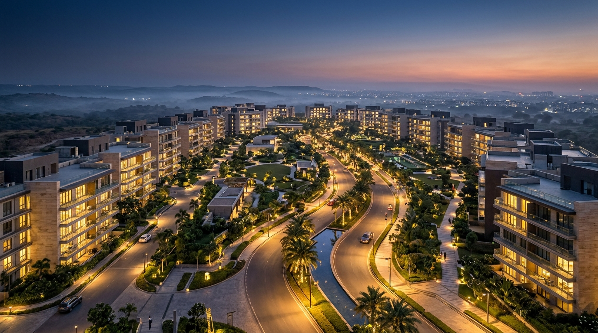
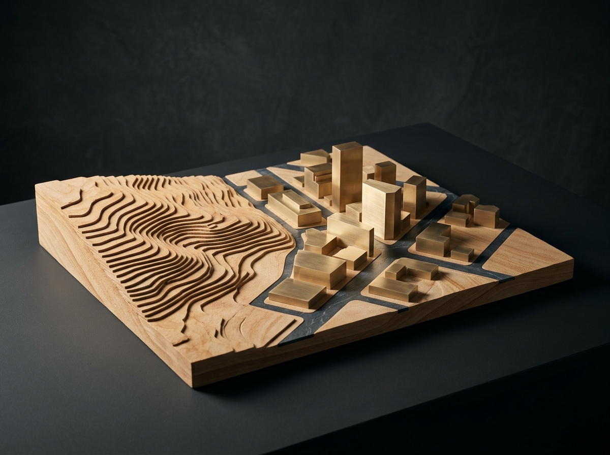
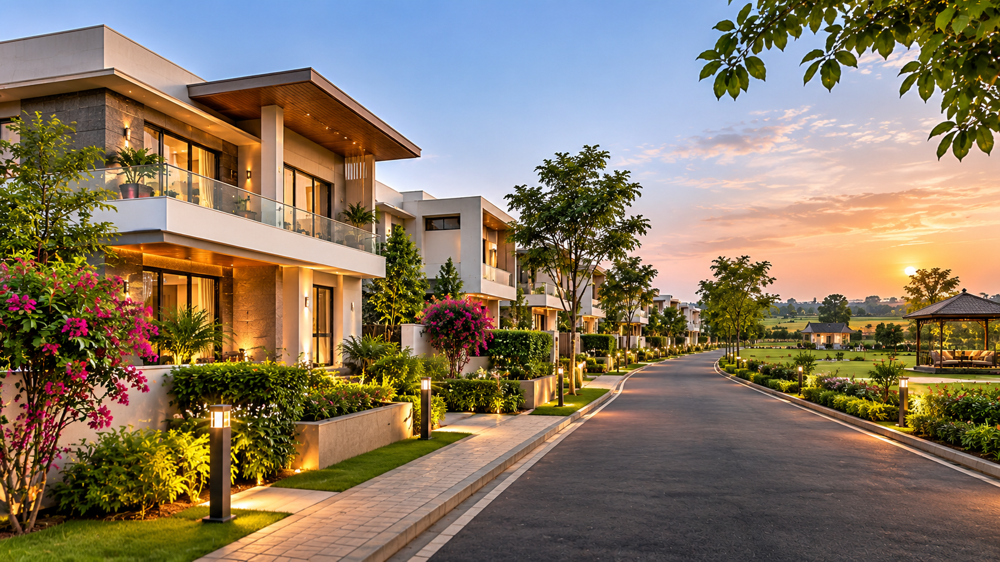

01
Land Acquisition
Bulk Land Ahead of Growth
Acquiring contiguous raw parcels across coastal, spiritual, and emerging Gujarat belts before infrastructure waves peak.
Arjan Odedra is a Gujarat-based real estate developer and township builder whose project record runs from 1991 to 2026 — delivering across coastal, spiritual, and major urban centres with more than 40 years of experience and 35+ townships created.

1991 – 2026 · Gujarat
Land-Up CraftBusiness Approach

Acquiring contiguous raw parcels across coastal, spiritual, and emerging Gujarat belts before infrastructure waves peak.
Boundary surveying, wide arterial roads, drainage, and landscaped medians turning raw tracts into structured townships.
Executing residential, commercial, farmhouse, factory & industrial, construction work, bungalows, and tenements.
Delivering 35+ townships and strategic assets from ₹2 crore to ₹100 crore ready for homeowners and investors.
Project History · 1991 – 2026
Beginning in Porbandar in 1991, Arjan Odedra established a disciplined approach: acquiring bulk land directly, developing foundational road and plot infrastructure, and delivering early residential communities across Chaya, Pipliya, and Ranavav.
Built on coastal soil — proving that well-planned townships transform regional neighbourhoods for generations.
Saurashtra Coastal OriginsAt a Glance
Years of hands-on real estate development & construction leadership.
Master-planned residential and multi-category townships delivered across Gujarat.
Bulk land acquisition, infrastructure development, and project delivery scale.
Active across 14+ coastal, spiritual & urban centres.
Promoters & Stewardship
Real Estate Developer & Township Builder · 40+ Yrs Exp.
Leading Gujarat land development from 1991 to 2026 with 35+ townships created from Porbandar and Dwarka to Surat, Ahmedabad, Lothal, and Dholera SIR.
Owner & Promoter · Rigima Crest Infra LLP
Driving strategic execution, project governance, and long-term partnership standards across residential, commercial, and township ventures.
Owner & Promoter · Rigima Crest Infra LLP
Shaping modern architectural standards, buyer transparency, and future-ready developments from our SG Highway Ahmedabad corporate office.
Areas of Work

Planned residential layouts and integrated communities built from raw land across Gujarat.
Next Chapter · 2026 & Beyond
Connect with Arjan Odedra and the Rigima Crest Infra LLP team for bulk land opportunities, township partnerships, and upcoming launches.